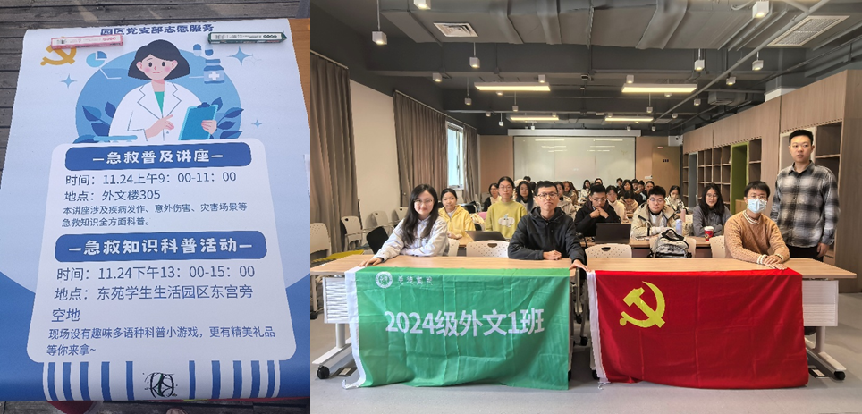

2025年10月 团建活动
此次“急救启蒙·安全随行”主题实践活动通过急救知识普及讲座、实操培训、互动游戏等形式，有效提升了学生的安全防范意识和急救技能。 同学们不仅掌握了心肺复苏（CPR）和AED使用等关键急救技能，还增强了在突发情况下的应对能力，有助于保障校园内的生命安全，也为构建和谐、安全的校园环境奠定了基础。
此次“急救启蒙·安全随行”主题实践活动通过急救知识普及讲座、实操培训、互动游戏等形式，有效提升了学生的安全防范意识和急救技能。 同学们不仅掌握了心肺复苏（CPR）和AED使用等关键急救技能，还增强了在突发情况下的应对能力，有助于保障校园内的生命安全，也为构建和谐、安全的校园环境奠定了基础。